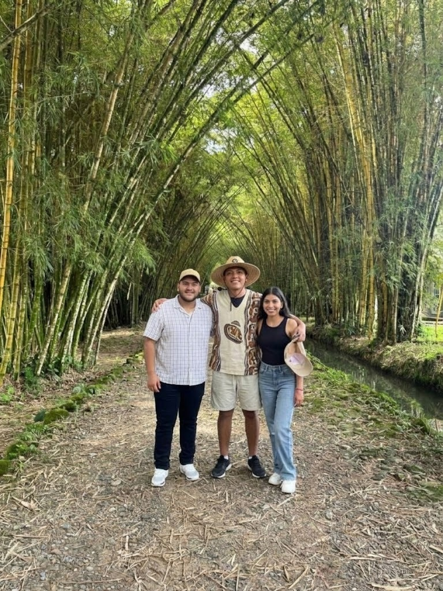

Este grupo se formó desde la etapa de nivelación. Jonathan y Nicolás ya se conocían desde la infancia y, durante nivelación, conocieron a Fernanda. Desde ese momento comenzaron a compartir más tiempo, experiencias y momentos juntos, formando una amistad que se ha mantenido hasta la actualidad y que continúa fortaleciéndose durante su etapa universitaria.
Bienvenido a nuestra exposición virtual grupal. Selecciona a un integrante en el menú superior para explorar los modelos interactivos en 3D que ha integrado.
Chevrolet, cariñosamente conocida como "Chevy", es una de las marcas de automóviles más icónicas a nivel mundial. Fundada en 1911, ha sido pionera en la innovación del motor y creadora de algunos de los "muscle cars" más legendarios de la historia.
Ver Imágenes 3DComercializado entre 1969 y 1994, el Chevrolet K5 Blazer es un emblemático SUV derivado de las camionetas C/K. Se popularizó por su potente tracción 4x4 y su diseño de tres puertas con techo trasero desmontable en sus primeras generaciones.
El Camaro RS/SS de 1967 «Hidden Jewel» es un legendario muscle car descubierto tras años de hibernación en un sótano. Destaca por su potente motor big-block, interior original y sus icónicos faros ocultos.
Transformers es una aclamada franquicia de entretenimiento que narra la guerra entre los nobles Autobots y los despiadados Decepticons. Liderados por el valiente Optimus Prime, estos organismos robóticos modulares tienen la capacidad de transformarse en vehículos y maquinaria de la Tierra.
Ver Imágenes 3DLíder indiscutible de los Autobots. Destaca por su inquebrantable sentido de la justicia y su característico diseño de camión Peterbilt 379 con llamas. Representa la esperanza en la interminable batalla por la paz del universo.
En su imponente forma robótica, Optimus Prime está equipado con tecnología cibertroniana avanzada. Este modelo destaca su estructura mecánica compleja y su postura lista para el combate contra cualquier amenaza.
Las motocicletas deportivas Yamaha representan la cumbre de la ingeniería de velocidad y el rendimiento en pista. Con una larga tradición en campeonatos mundiales, combinan una agilidad sobresaliente con motores de alta potencia y diseños aerodinámicos únicos.
Ver Imágenes 3DLa Yamaha YZF-R1 es una motocicleta deportiva de alto rendimiento introducida en 1998. Es famosa por su potente motor de 1000cc, su tecnología avanzada derivada de MotoGP y su agresivo diseño aerodinámico, ideal para dominar la pista.
La Yamaha YZF-R6 es una icónica motocicleta superdeportiva de 600cc. Reconocida mundialmente por su extrema agilidad en curvas y su motor de altas revoluciones, ha sido una de las motos favoritas tanto para entusiastas de la calle como para pilotos de carreras.